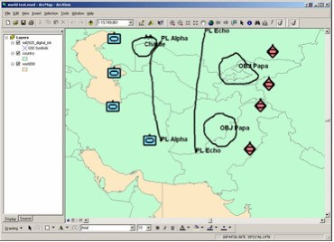

|
|

The GIS Digital Ink system is a set of libraries created as a plug-in for a mapping system. The plug-in contains a simple dialog with a set of tabs for configuring the inking and collaboration system. Once configured, shapes are drawn
using an inking technology for gesture recognition that is similar to the operation of ink on PDAs or tablet PCs, plus this unique capability is also tied to the voice recognition system that is available in any Windows XP or Tablet
PC.
The voice input is translated to a fixed set of words that are associated with standard symbols in the MIL2525B symbol set. Combine the gesture recognition and the symbol code from the voice command recognition to get the correct
symbol displayed. The gesture set and voice command set are easily modified for new symbology sets like those in virtual reality systems or GIS feature datasets.
Digital Ink:
- Simplifies menu selection during pen input by substituting menus with simple voice commands.
- Utilizes the voice technology built into Windows XP or Tablet PC
- Has a gesture recognition system for specific shapes like J, U, T,
and Y
- Has a built in Sharing system for Collaboration
- Can be used in any mapping system and supports GPS also
.
|
|